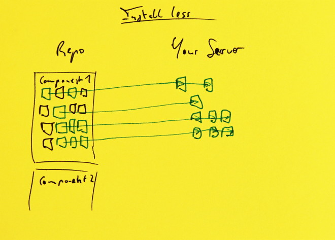
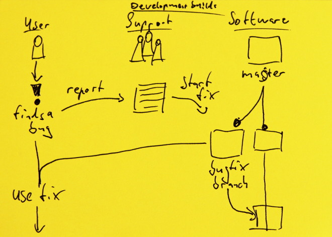
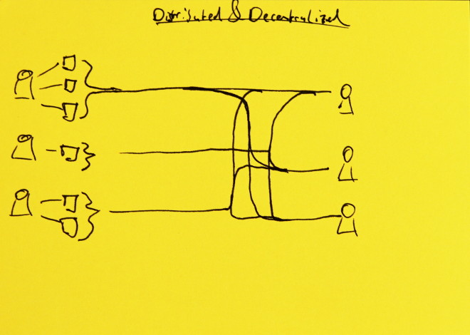
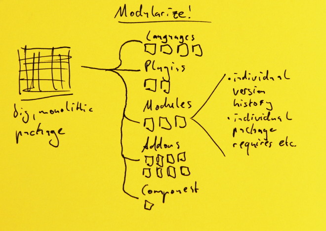

What's mangrove?
A decentralized
deployment system
delivering fresh
software
to people with
no time to waste

It's built for:
hyperspeed
überefficiency
professionals
we automation
...so we made sure that mangrove not only
does your laundry for you,
but shop for your clothes and wear them, too.
It's that good.
Hey! Hey you! thanks for checking out this site.
Just a note: It's currently still under construction,
so don't mind the mess.
So - what's a package manager?
A package manager helps you install software without having to copy files or links into your system. They connect you to sources of packages
If you have used a computer or similar device in the past couple of years, you will certainly have used a package manager - whether you know it or not.
For instance - app store are a popular way to manage packages (those packages simply happen to be entire applications) or you might have used one to update existing software on your computer with an automatic updater (in turn being a package manager for a single application).
mangrove brings that concept into the joomla world in a more elegant way than existing solutions.
Who are you?
Either way: That's awesome! We have something neat for you, no matter which of the three groups above you belong to.
What's in it for... Regular Users?
Install less
Install only the parts you need.
Bye bye "firehose-install-everything"

This flowchart shows how instead of installing a full package with many smaller parts, you just install the parts that you need.
Install faster
Including one-click
(and automatic)
installs and updates.
Not really sure what to do here... a comparison? Just a video?
Get new features faster
No more waiting for the next "big" release, get plugins and features ahead of major releases.
Development Builds
without the headaches
mangrove makes using bleeding edge builds both safer and more convenient

A user finds a bug and reports it to the support team. They file a bug report and a new branch of the source code is set up. After a fix has been found, the user installs only the fixed branch, not a completely new package.
Sometimes, you need to use bleeding edge software. If everything goes right, that gets you all the fixes you need. Unfortunately, however, you may also get some new bugs you didn't want.
With mangrove, software developers can split off fixes into separate branches so you only get the version you need, not all the changes that you're not ready for, yet (for instance when receiving support on a bug).
What's in it for... Site Developers?
Deploy software to your clients
at hyperspeed
We're giving you the power over your own clients instead of imposing ourselves.
Manage your sources
your way
Including your own (which might be transparent relays to other servers).
Pick and choose
updates
Clients trust you with their site, so you should be in charge of making sure they're happy.
What's in it for... Software Developers?
Distributed & Decentralized
Where other solutions try to bind you to them as a service, mangrove is set up to be decentralized. However, since it has networking capabilities built in, developers can link up and form a distributed network.
Modularize your projects
Components, Plugins, Modules, Translations… Applications can get pretty hard to manage with all the small parts you have to keep track of in your codebase. With mangrove, you can dispose of complicated build scripts or endless package fiddling. We even generate those annoying .xml files for you, if you want!
Connects to GitHub
Direct integration, including branches and ticket information. (Integration with other services possible or planned.)

Multiple package vendors produce multiple different applications. Those are pushed into public streams that are then used by clients.

A big, monolithic package already consists of many large parts. These are broken up into several categories - Components, Modules, Plugins, Language Packs and Addons. All of those have their own individual version history and packaging details (like requiring other packages)
Integrates with AEC
Ready-to-go, Ready-to-sell: With joomla, AEC and mangrove, you're ready to have your business set up in no-time. Set up memberships for individual software packages and restrict the number of connected sites, if you want to.
When setting up AEC, an integration with the mangrove server can be set up. That automatically checks back with the server to find out which permissions could be set for users. When a user purchases a plan, the serer is queried and sets the correct permissions.
Push-to-Deploy
One push to your repository and a few moments later, a new package is available to your clients. (Or, with automatic updates, is already installed for your clients.)

A developer creates a new commit and pushes that to the repository. This in turn triggers a build on the mangrove server. This creates a new package which is served to clients.
Makes proper use of git
Understands branches and uses semantic versioning automatically.
Wait a minute! How does it do automatic version numbers?
When a commit is applied to a repository, mangrove server checks which packages are affected and increments their version number according to the number of changes, individually. Branches carry their own version numbers and on a merge, these are joined up.